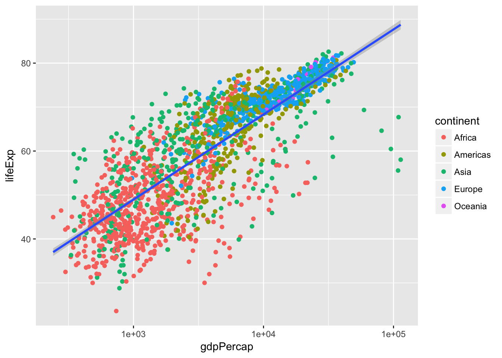

Learning objectives
- Refresh our skills with
dplyrfunctions- Refresh our skills with
ggplot2functions- To be able to seek help via
?and Google
Challenge 1 – Make a new directory and project for DIBSI Day 3
- In your project directory, either using the Project tab of RStudio or your OS’ file system, create the following directories:
- data
- scripts
- results
- Create a new .R script file in the scripts/ folder calling it whatever you like
Challenge 2 – Subsetting
- Load any libraries you may need
- Subset the gapminder data to only Oceania countries post-1980.
- Remove the continent column
- Make a scatter plot of gdpPercap vs. population colored by country
Advanced How would you determine the median population for the North American countries between 1970 and 1980?
Challenge 3 – Add new information to a plot we’ve seen
Recreate the plot below. It uses the gapminder data and shows life expectancy plotted against GDP per capita as a scatterplot. Points are colored by continent, we have made the x axis a log scale, and we have added a single best-fit line through all the points.

Now, modify the previous plot to size the points in proportion to the population of the county.
MCQ: Data Reduction
Produce a data.frame with only the names, years, and per-capita GDP of countries where per capita gdp is less than a dollar a day sorted from most- to least-recent.
- Tip: The
gdpPercapvariable is annual gdp. You’ll need to adjust.- Tip: For complex tasks, it often helps to use pencil and paper to write/draw/map the various steps needed and how they fit together before writing any code.
What is the annual per-capita gdp, rounded to the nearest dollar, of the first row in the data.frame?
- $278
- $312
- $331
- $339
Advanced: Use dplyr functions and ggplot to plot per-capita GDP versus population for North American countries after 1970.
- Once you’ve made the graph, transform both axes to a log10 scale. There are two ways to do this, one by creating new columns in the data frame, and another using functions provided by ggplot to transform the axes. Implement both, in that order. Which do you prefer and why?